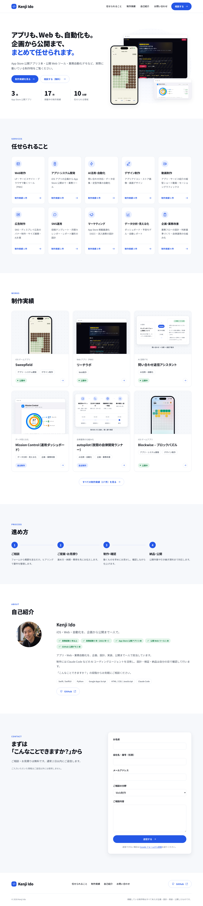

MAKING
#01
実物
指示
生成
確認
公開
kenji6836.github.io

紹介 HP を、
Claude Code
で作った。
claude
>
Enter
送信
Claude Code が作業中…
まず、
日本語
で頼む
content.json
1 ファイル
{
"categories"
:
10
,
"works"
:
17
,
…
}
build
19 ページ
文言は
JSON 1 つ
。
19 ページ
を自動生成
受入テスト
機械検査
禁止語
OK
リンク切れ
OK
画像
OK
到達性
OK
別系統 AI の視覚レビュー
GPT
公開前に 1 回
通過
公開へ
テスト
と別 AI の
レビュー
で確認
kenji6836.github.io
10 分野・17 作品
19 ページ
決定 → 公開 約 2 時間 15 分
決定から
約 2 時間
で公開
MAKING
K
MAKING
#01
AIで作って、本番に出す。
MAKING
K
Kenji Ido
@idk0723ai
作った実物は HP で
kenji6836.github.io